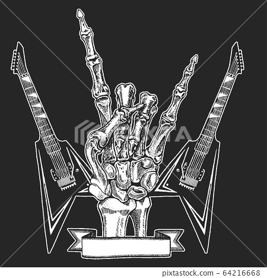
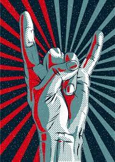
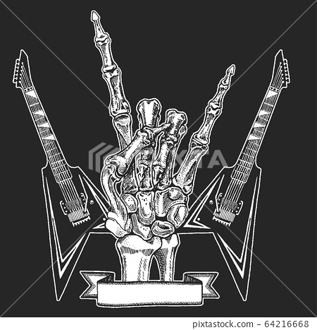
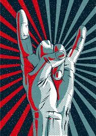
Info: Name: Кравченко Михайло, Tg Nickname:@kto_v_les_kto_po_drova, city:м.Львів, English(А1), telephone:+380679170990
Rock music is a broad genre of popular music that originated as "rock and roll" in the United States in the late 1940s and early 1950s, developing into a range of different styles in the mid-1960s and later, particularly in the United States and the United Kingdom.[1] It has its roots in 1940s and 1950s rock and roll, a style that drew directly from the blues and rhythm and blues genres of African-American music and from country music. Rock music also drew strongly from a number of other genres such as electric blues and folk, and incorporated influences from jazz, classical, and other musical styles. For instrumentation, rock has centered on the electric guitar, usually as part of a rock group with electric bass, drums, and one or more singers. Usually, rock is song-based music with a time signature using a verse–chorus form, but the genre has become extremely diverse. Like pop music, lyrics often stress romantic love but also address a wide variety of other themes that are frequently social or political. Rock musicians in the mid-1960s began to advance the album ahead of the single as the dominant form of recorded music expression and consumption, with the Beatles at the forefront of this development. Their contributions lent the genre a cultural legitimacy in the mainstream and initiated a rock-informed album era in the music industry for the next several decades. By the late 1960s "classic rock"[1] period, a number of distinct rock music subgenres had emerged, including hybrids like blues rock, folk rock, country rock, southern rock, raga rock, and jazz rock, many of which contributed to the development of psychedelic rock, which was influenced by the countercultural psychedelic and hippie scene. New genres that emerged included progressive rock, which extended the artistic elements, glam rock, which highlighted showmanship and visual style, and the diverse and enduring subgenre of heavy metal, which emphasized volume, power, and speed. In the second half of the 1970s, punk rock reacted by producing stripped-down, energetic social and political critiques. Punk was an influence in the 1980s on new wave, post-punk and eventually alternative rock.
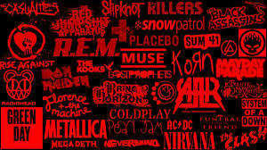The foundations of rock music are in rock and roll, which originated in the United States during the late 1940s and early 1950s, and quickly spread to much of the rest of the world. Its immediate origins lay in a melding of various black musical genres of the time, including rhythm and blues and gospel music, with country and western.[24] In 1951, Cleveland, Ohio disc jockey Alan Freed began playing rhythm and blues music (then termed "race music") for a multi-racial audience, and is credited with first using the phrase "rock and roll" to describe the music.[25] A black and white photograph of Elvis Presley standing between two sets of bars Elvis Presley in a promotion shot for Jailhouse Rock in 1957 Debate surrounds the many recordings which have been suggested as "the first rock and roll record". Contenders include Wynonie Harris' "Good Rocking Tonight" (1948);[26] Goree Carter's "Rock Awhile" (1949);[27] Jimmy Preston's "Rock the Joint" (1949), which was later covered by Bill Haley & His Comets in 1952;[28] and "Rocket 88" by Jackie Brenston and his Delta Cats (in fact, Ike Turner and his band the Kings of Rhythm), recorded by Sam Phillips for Sun Records in 1951.[29] Four years later, Bill Haley's "Rock Around the Clock" (1955) became the first rock and roll song to top Billboard magazine's main sales and airplay charts, and opened the door worldwide for this new wave of popular culture.[30][31]
he term pop has been used since the early 20th century to refer to popular music in general, but from the mid-1950s it began to be used for a distinct genre, aimed at a youth market, often characterized as a softer alternative to rock and roll.[48][49] From about 1967, it was increasingly used in opposition to the term rock music, to describe a form that was more commercial, ephemeral and accessible.[21] In contrast rock music was seen as focusing on extended works, particularly albums, was often associated with particular sub-cultures (like the counterculture of the 1960s), placed an emphasis on artistic values and "authenticity", stressed live performance and instrumental or vocal virtuosity and was often seen as encapsulating progressive developments rather than simply reflecting existing trends.[21][48][49][50] Nevertheless, much pop and rock music has been very similar in sound, instrumentation and even lyrical content.[nb 1]
The instrumental rock and roll of performers such as Duane Eddy, Link Wray and the Ventures was developed by Dick Dale, who added distinctive "wet" reverb, rapid alternate picking, and Middle Eastern and Mexican influences. He produced the regional hit "Let's Go Trippin'" in 1961 and launched the surf music craze, following up with songs like "Misirlou" (1962).[65] Like Dale and his Del-Tones, most early surf bands were formed in Southern California, including the Bel-Airs, the Challengers, and Eddie & the Showmen.[65] The Chantays scored a top ten national hit with "Pipeline" in 1963 and probably the best known surf tune was 1963's "Wipe Out", by the Surfaris, which hit number 2 and number 10 on the Billboard charts in 1965.[66]
By the end of 1962, what would become the British rock scene had started with beat groups like the Beatles, Gerry & the Pacemakers and the Searchers from Liverpool and Freddie and the Dreamers, Herman's Hermits and the Hollies from Manchester. They drew on a wide range of American influences including 1950s rock and roll, soul, rhythm and blues, and surf music,[70] initially reinterpreting standard American tunes and playing for dancers. Bands like the Animals from Newcastle and Them from Belfast,[71] and particularly those from London like the Rolling Stones and the Yardbirds, were much more directly influenced by rhythm and blues and later blues music.[72] Soon these groups were composing their own material, combining US forms of music and infusing it with a high energy beat. Beat bands tended towards "bouncy, irresistible melodies", while early British blues acts tended towards less sexually innocent, more aggressive songs, often adopting an anti-establishment stance. There was, however, particularly in the early stages, considerable musical crossover between the two tendencies.[73] By 1963, led by the Beatles, beat groups had begun to achieve national success in Britain, soon to be followed into the charts by the more rhythm and blues focused acts.[74]
Garage rock was a raw form of rock music, particularly prevalent in North America in the mid-1960s and so called because of the perception that it was rehearsed in the suburban family garage.[87][88] Garage rock songs often revolved around the traumas of high school life, with songs about "lying girls" and unfair social circumstances being particularly common.[89] The lyrics and delivery tended to be more aggressive than was common at the time, often with growled or shouted vocals that dissolved into incoherent screaming.[87] They ranged from crude one-chord music (like the Seeds) to near-studio musician quality (including the Knickerbockers, the Remains, and the Fifth Estate). There were also regional variations in many parts of the country with flourishing scenes particularly in California and Texas.[89] The Pacific Northwest states of Washington and Oregon had perhaps[according to whom?] the most defined regional sound.[90]
Although the first impact of the British Invasion on American popular music was through beat and R&B based acts, the impetus was soon taken up by a second wave of bands that drew their inspiration more directly from American blues, including the Rolling Stones and the Yardbirds.[97] British blues musicians of the late 1950s and early 1960s had been inspired by the acoustic playing of figures such as Lead Belly, who was a major influence on the Skiffle craze, and Robert Johnson.[98] Increasingly they adopted a loud amplified sound, often centered on the electric guitar, based on the Chicago blues, particularly after the tour of Britain by Muddy Waters in 1958, which prompted Cyril Davies and guitarist Alexis Korner to form the band Blues Incorporated.[99] The band involved and inspired many of the figures of the subsequent British blues boom, including members of the Rolling Stones and Cream, combining blues standards and forms with rock instrumentation and emphasis.[61]
By the 1960s, the scene that had developed out of the American folk music revival had grown to a major movement, utilising traditional music and new compositions in a traditional style, usually on acoustic instruments.[105] In America the genre was pioneered by figures such as Woody Guthrie and Pete Seeger and often identified with progressive or labor politics.[105] In the early sixties figures such as Joan Baez and Bob Dylan had come to the fore in this movement as singer-songwriters.[106] Dylan had begun to reach a mainstream audience with hits including "Blowin' in the Wind" (1963) and "Masters of War" (1963), which brought "protest songs" to a wider public,[107] but, although beginning to influence each other, rock and folk music had remained largely separate genres, often with mutually exclusive audiences.[108]
Psychedelic music's LSD-inspired vibe began in the folk scene.[116] The first group to advertise themselves as psychedelic rock were the 13th Floor Elevators from Texas.[116] The Beatles introduced many of the major elements of the psychedelic sound to audiences in this period, such as guitar feedback, the Indian sitar and backmasking sound effects.[117] Psychedelic rock particularly took off in California's emerging music scene as groups followed the Byrds's shift from folk to folk rock from 1965.[117] The psychedelic lifestyle, which revolved around hallucinogenic drugs, had already developed in San Francisco and particularly prominent products of the scene were Big Brother and the Holding Company, the Grateful Dead and Jefferson Airplane.[117][118] The Jimi Hendrix Experience's lead guitarist, Jimi Hendrix did extended distorted, feedback-filled jams which became a key feature of psychedelia.[117] Psychedelic rock reached its apogee in the last years of the decade. 1967 saw the Beatles release their definitive psychedelic statement in Sgt. Pepper's Lonely Hearts Club Band, including the controversial track "Lucy in the Sky with Diamonds", the Rolling Stones responded later that year with Their Satanic Majesties Request,[117] and the Pink Floyd debuted with The Piper at the Gates of Dawn. Key recordings included Jefferson Airplane's Surrealistic Pillow and the Doors' Strange Days.[119] These trends peaked in the 1969 Woodstock festival, which saw performances by most of the major psychedelic acts.[117]
Progressive rock, a term sometimes used interchangeably with art rock, moved beyond established musical formulas by experimenting with different instruments, song types, and forms.[123] From the mid-1960s the Left Banke, the Beatles, the Rolling Stones and the Beach Boys, had pioneered the inclusion of harpsichords, wind, and string sections on their recordings to produce a form of Baroque rock and can be heard in singles like Procol Harum's "A Whiter Shade of Pale" (1967), with its Bach-inspired introduction.[124] The Moody Blues used a full orchestra on their album Days of Future Passed (1967) and subsequently created orchestral sounds with synthesizers.[123] Classical orchestration, keyboards, and synthesizers were a frequent addition to the established rock format of guitars, bass, and drums in subsequent progressive rock.[125]
In the late 1960s, jazz-rock emerged as a distinct subgenre out of the blues-rock, psychedelic, and progressive rock scenes, mixing the power of rock with the musical complexity and improvisational elements of jazz. AllMusic states that the term jazz-rock "may refer to the loudest, wildest, most electrified fusion bands from the jazz camp, but most often it describes performers coming from the rock side of the equation." Jazz-rock "...generally grew out of the most artistically ambitious rock subgenres of the late '60s and early '70s", including the singer-songwriter movement.[138] Many early US rock and roll musicians had begun in jazz and carried some of these elements into the new music. In Britain the subgenre of blues rock, and many of its leading figures, like Ginger Baker and Jack Bruce of the Eric Clapton-fronted band Cream, had emerged from the British jazz scene. Often highlighted as the first true jazz-rock recording is the only album by the relatively obscure New York-based the Free Spirits with Out of Sight and Sound (1966). The first group of bands to self-consciously use the label were R&B oriented white rock bands that made use of jazzy horn sections, like Electric Flag, Blood, Sweat & Tears and Chicago, to become some of the most commercially successful acts of the later 1960s and the early 1970s.[139]
The decade is, of course, an arbitrary schema itself—time doesn't just execute a neat turn toward the future every ten years. But like a lot of artificial concepts—money, say—the category does take on a reality of its own once people figure out how to put it to work. "The '60s are over," a slogan one only began to hear in 1972 or so, mobilized all those eager to believe that idealism had become passe, and once they were mobilized, it had. In popular music, embracing the '70s meant both an elitist withdrawal from the messy concert and counterculture scene and a profiteering pursuit of the lowest common denominator in FM radio and album rock.
Roots rock is the term now used to describe a move away from what some saw as the excesses of the psychedelic scene, to a more basic form of rock and roll that incorporated its original influences, particularly country and folk music, leading to the creation of country rock and Southern rock.[141] In 1966 Bob Dylan went to Nashville to record the album Blonde on Blonde.[142] This, and subsequent more clearly country-influenced albums, have been seen as creating the genre of country folk, a route pursued by a number of largely acoustic folk musicians.[142] Other acts that followed the back-to-basics trend were the Canadian group the Band and the California-based Creedence Clearwater Revival, both of which mixed basic rock and roll with folk, country and blues, to be among the most successful and influential bands of the late 1960s.[143] The same movement saw the beginning of the recording careers of Californian solo artists like Ry Cooder, Bonnie Raitt and Lowell George,[144] and influenced the work of established performers such as the Rolling Stones' Beggar's Banquet (1968) and the Beatles' Let It Be (1970).[117] Reflecting on this change of trends in rock music over the past few years, Christgau wrote in his June 1970 "Consumer Guide" column that this "new orthodoxy" and "cultural lag" abandoned improvisatory, studio-ornamented productions in favor of an emphasis on "tight, spare instrumentation" and song composition: "Its referents are '50s rock, country music, and rhythm-and-blues, and its key inspiration is the Band."[145]
lam rock emerged from the English psychedelic and art rock scenes of the late 1960s and can be seen as both an extension of and reaction against those trends.[149] Musically diverse, varying between the simple rock and roll revivalism of figures like Alvin Stardust to the complex art rock of Roxy Music, and can be seen as much as a fashion as a musical subgenre.[149] Visually it was a mesh of various styles, ranging from 1930s Hollywood glamor, through 1950s pin-up sex appeal, pre-war Cabaret theatrics, Victorian literary and symbolist styles, science fiction, to ancient and occult mysticism and mythology; manifesting itself in outrageous clothes, makeup, hairstyles, and platform-soled boots.[150] Glam is most noted for its sexual and gender ambiguity and representations of androgyny, beside extensive use of theatrics.[151] It was prefigured by the showmanship and gender-identity manipulation of American acts such as the Cockettes and Alice Cooper.[152]
After the early successes of Latin rock in the 1960s, Chicano musicians like Carlos Santana and Al Hurricane continued to have successful careers throughout the 1970s. Santana opened the decade with success in his 1970 single "Black Magic Woman" on the Abraxas album.[159] His third album Santana III yielded the single "No One to Depend On", and his fourth album Caravanserai experimented with his sound to mixed reception.[160][161] He later released a series of four albums that all achieved gold status: Welcome, Borboletta, Amigos, and Festivál. Al Hurricane continued to mix his rock music with New Mexico music, though he was also experimenting more heavily with Jazz music, which led to several successful singles, especially on his Vestido Mojado album, including the eponymous "Vestido Mojado", as well as "Por Una Mujer Casada" and "Puño de Tierra"; his brothers had successful New Mexico music singles in "La Del Moño Colorado" by Tiny Morrie and "La Cumbia De San Antone" by Baby Gaby.[162] Al Hurricane Jr. also began his successful rock-infused New Mexico music recording career in the 1970s, with his 1976 rendition of "Flor De Las Flores".[163][164] Los Lobos gained popularity at this time, with their first album Los Lobos del Este de Los Angeles in 1977.
From the late 1960s it became common to divide mainstream rock music into soft and hard rock. Soft rock was often derived from folk rock, using acoustic instruments and putting more emphasis on melody and harmonies.[166] Major artists included Carole King, Cat Stevens and James Taylor.[166] It reached its commercial peak in the mid- to late 1970s with acts like Billy Joel, America and the reformed Fleetwood Mac, whose Rumours (1977) was the best-selling album of the decade.[167] In contrast, hard rock was more often derived from blues-rock and was played louder and with more intensity.[168] It often emphasised the electric guitar, both as a rhythm instrument using simple repetitive riffs and as a solo lead instrument, and was more likely to be used with distortion and other effects.[168] Key acts included British Invasion bands like the Kinks, as well as psychedelic era performers like Cream, Jimi Hendrix and the Jeff Beck Group.[168] Hard rock-influenced bands that enjoyed international success in the later 1970s included Queen,[169] Thin Lizzy,[170] Aerosmith, AC/DC,[168] and Van Halen.
Rock, mostly the heavy metal genre, has been criticized by some Christian leaders, who have condemned it as immoral, anti-Christian and even satanic.[175] However, Christian rock began to develop in the late 1960s, particularly out of the Jesus movement beginning in Southern California, and emerged as a subgenre in the 1970s with artists like Larry Norman, usually seen as the first major "star" of Christian rock.[176] The genre was mostly a phenomenon in the United States.[177] Many Christian rock performers have ties to the contemporary Christian music scene. Starting in the 1980s Christian pop performers have had some mainstream success. While these artists were largely acceptable in Christian communities, the adoption of heavy rock and glam metal styles by bands like Stryper, who achieved considerable mainstream success in the 1980s, was more controversial.[178][179] From the 1990s there were increasing numbers of acts who attempted to avoid the Christian band label, preferring to be seen as groups who were also Christians, including P.O.D.[180]
American working-class oriented heartland rock, characterized by a straightforward musical style, and a concern with the lives of ordinary, blue-collar American people, developed in the second half of the 1970s. The term heartland rock was first used to describe Midwestern arena rock groups like Kansas, REO Speedwagon and Styx, but which came to be associated with a more socially concerned form of roots rock more directly influenced by folk, country and rock and roll.[181] It has been seen as an American Midwest and Rust Belt counterpart to West Coast country rock and the Southern rock of the American South.[182] Led by figures who had initially been identified with punk and New Wave, it was most strongly influenced by acts such as Bob Dylan, the Byrds, Creedence Clearwater Revival and Van Morrison, and the basic rock of 1960s garage and the Rolling Stones.[183]
Punk rock was developed between 1974 and 1976 in the United States and the United Kingdom. Rooted in garage rock and other forms of what is now known as protopunk music, punk rock bands eschewed the perceived excesses of mainstream 1970s rock.[188] They created fast, hard-edged music, typically with short songs, stripped-down instrumentation, and often political, anti-establishment lyrics. Punk embraces a DIY (do it yourself) ethic, with many bands self-producing their recordings and distributing them through informal channels.[189]
Although punk rock was a significant social and musical phenomenon, it achieved less in the way of record sales (being distributed by small specialty labels such as Stiff Records),[195] or American radio airplay (as the radio scene continued to be dominated by mainstream formats such as disco and album-oriented rock).[196] Punk rock had attracted devotees from the art and collegiate world and soon bands sporting a more literate, arty approach, such as Talking Heads and Devo began to infiltrate the punk scene; in some quarters the description "new wave" began to be used to differentiate these less overtly punk bands.[197] Record executives, who had been mostly mystified by the punk movement, recognized the potential of the more accessible new wave acts and began aggressively signing and marketing any band that could claim a remote connection to punk or new wave.[198] Many of these bands, such as the Cars and the Go-Go's can be seen as pop bands marketed as new wave;[199] other existing acts, including the Police, the Pretenders and Elvis Costello, used the new wave movement as the springboard for relatively long and critically successful careers,[200] while "skinny tie" bands exemplified by the Knack,[201] or the photogenic Blondie, began as punk acts and moved into more commercial territory.[202]
If hardcore most directly pursued the stripped down aesthetic of punk, and new wave came to represent its commercial wing, post-punk emerged in the later 1970s and early 1980s as its more artistic and challenging side. Major influences beside punk bands were the Velvet Underground, Frank Zappa and Captain Beefheart, and the New York-based no wave scene which placed an emphasis on performance, including bands such as James Chance and the Contortions, DNA and Sonic Youth.[207] Early contributors to the genre included the US bands Pere Ubu, Devo, the Residents and Talking Heads.[207]
The term alternative rock was coined in the early 1980s to describe rock artists who did not fit into the mainstream genres of the time. Bands dubbed "alternative" had no unified style, but were all seen as distinct from mainstream music. Alternative bands were linked by their collective debt to punk rock, through hardcore, New Wave or the post-punk movements.[213] Important alternative rock bands of the 1980s in the US included R.E.M., Hüsker Dü, Jane's Addiction, Sonic Youth, and the Pixies,[213] and in the UK the Cure, New Order, the Jesus and Mary Chain, and the Smiths.[214] Artists were largely confined to independent record labels, building an extensive underground music scene based on college radio, fanzines, touring, and word-of-mouth.[215] They rejected the dominant synth-pop of the early 1980s, marking a return to group-based guitar rock.[216][217][218]
Disaffected by commercialized and highly produced pop and rock in the mid-1980s, bands in Washington state (particularly in the Seattle area) formed a new style of rock which sharply contrasted with the mainstream music of the time.[222] The developing genre came to be known as "grunge", a term descriptive of the dirty sound of the music and the unkempt appearance of most musicians, who actively rebelled against the over-groomed images of other artists.[222] Grunge fused elements of hardcore punk and heavy metal into a single sound, and made heavy use of guitar distortion, fuzz and feedback.[222] The lyrics were typically apathetic and angst-filled, and often concerned themes such as social alienation and entrapment, although it was also known for its dark humor and parodies of commercial rock.[222]
Britpop emerged from the British alternative rock scene of the early 1990s and was characterised by bands particularly influenced by British guitar music of the 1960s and 1970s.[214] The Smiths were a major influence, as were bands of the Madchester scene, which had dissolved in the early 1990s.[83] The movement has been seen partly as a reaction against various US-based, musical and cultural trends in the late 1980s and early 1990s, particularly the grunge phenomenon and as a reassertion of a British rock identity.[214] Britpop was varied in style, but often used catchy tunes and hooks, beside lyrics with particularly British concerns and the adoption of the iconography of the 1960s British Invasion, including the symbols of British identity previously utilised by the mods.[227] It was launched around 1993 with releases by groups such as Suede and Blur, who were soon joined by others including Oasis, Pulp, Supergrass, and Elastica, who produced a series of successful albums and singles.[214] For a while the contest between Blur and Oasis was built by the popular press into the "Battle of Britpop", initially won by Blur, but with Oasis achieving greater long-term and international success, directly influencing later Britpop bands, such as Ocean Colour Scene and Kula Shaker.[228] Britpop groups brought British alternative rock into the mainstream and formed the backbone of a larger British cultural movement known as Cool Britannia.[229] Although its more popular bands, particularly Blur and Oasis, were able to spread their commercial success overseas, especially to the United States, the movement had largely fallen apart by the end of the decade.[214]
The term post-grunge was coined for the generation of bands that followed the emergence into the mainstream and subsequent hiatus of the Seattle grunge bands. Post-grunge bands emulated their attitudes and music, but with a more radio-friendly commercially oriented sound.[226] Often they worked through the major labels and came to incorporate diverse influences from jangle pop, pop-punk, alternative metal or hard rock.[226] The term post-grunge originally was meant to be pejorative, suggesting that they were simply musically derivative, or a cynical response to an "authentic" rock movement.[230] Originally, grunge bands that emerged when grunge was mainstream and were suspected of emulating the grunge sound were pejoratively labelled as post-grunge.[230] From 1994, former Nirvana drummer Dave Grohl's new band, the Foo Fighters, helped popularize the genre and define its parameters.[231]
The origins of 1990s pop punk can be seen in the more song-oriented bands of the 1970s punk movement like Buzzcocks and the Clash, commercially successful new wave acts such as the Jam and the Undertones, and the more hardcore-influenced elements of alternative rock in the 1980s.[233] Pop-punk tends to use power-pop melodies and chord changes with speedy punk tempos and loud guitars.[234] Punk music provided the inspiration for some California-based bands on independent labels in the early 1990s, including Rancid, Pennywise, Weezer and Green Day.[233] In 1994 Green Day moved to a major label and produced the album Dookie, which found a new, largely teenage, audience and proved a surprise diamond-selling success, leading to a series of hit singles, including two number ones in the US.[213] They were soon followed by the eponymous debut from Weezer, which spawned three top ten singles in the US.[235] This success opened the door for the multi-platinum sales of metallic punk band the Offspring with Smash (1994).[213] This first wave of pop punk reached its commercial peak with Green Day's Nimrod (1997) and the Offspring's Americana (1998).[236]
In the 1980s the terms indie rock and alternative rock were used interchangeably.[237] By the mid-1990s, as elements of the movement began to attract mainstream interest, particularly grunge and then Britpop, post-grunge and pop-punk, the term alternative began to lose its meaning.[237] Those bands following the less commercial contours of the scene were increasingly referred to by the label indie.[237] They characteristically attempted to retain control of their careers by releasing albums on their own or small independent labels, while relying on touring, word-of-mouth, and airplay on independent or college radio stations for promotion.[237] Linked by an ethos more than a musical approach, the indie rock movement encompassed a wide range of styles, from hard-edged, grunge-influenced bands like the Cranberries and Superchunk, through do-it-yourself experimental bands like Pavement, to punk-folk singers such as Ani DiFranco.[213][214] It has been noted that indie rock has a relatively high proportion of female artists compared with preceding rock genres, a tendency exemplified by the development of feminist-informed Riot grrrl music.[238] Many countries have developed an extensive local indie scene, flourishing with bands with enough popularity to survive inside the respective country, but virtually unknown outside them.[239]
Alternative metal emerged from the hardcore scene of alternative rock in the US in the later 1980s, but gained a wider audience after grunge broke into the mainstream in the early 1990s.[246] Early alternative metal bands mixed a wide variety of genres with hardcore and heavy metal sensibilities, with acts like Jane's Addiction and Primus utilizing progressive rock, Soundgarden and Corrosion of Conformity using garage punk, the Jesus Lizard and Helmet mixing noise rock, Ministry and Nine Inch Nails influenced by industrial music, Monster Magnet moving into psychedelia, Pantera, Sepultura and White Zombie creating groove metal, while Biohazard, Limp Bizkit and Faith No More turned to hip hop and rap.[246]
From about 1997, as dissatisfaction grew with the concept of Cool Britannia, and Britpop as a movement began to dissolve, emerging bands began to avoid the Britpop label while still producing music derived from it.[261][262] Many of these bands tended to mix elements of British traditional rock (or British trad rock),[263] particularly the Beatles, Rolling Stones and Small Faces,[264] with American influences, including post-grunge.[265][266] Drawn from across the United Kingdom (with several important bands emerging from the north of England, Scotland, Wales and Northern Ireland), the themes of their music tended to be less parochially centered on British, English and London life and more introspective than had been the case with Britpop at its height.[267][268] This, beside a greater willingness to engage with the American press and fans, may have helped some of them in achieving international success.[269]
Post-hardcore developed in the US, particularly in the Chicago and Washington, DC areas, in the early to mid-1980s, with bands that were inspired by the do-it-yourself ethics and guitar-heavy music of hardcore punk, but influenced by post-punk, adopting longer song formats, more complex musical structures and sometimes more melodic vocal styles.[274]
In the early 2000s, a new group of bands that played a stripped down and back-to-basics version of guitar rock, emerged into the mainstream. They were variously characterised as part of a garage rock, post-punk or new wave revival.[279][280][281][282] Because the bands came from across the globe, cited diverse influences (from traditional blues, through New Wave to grunge), and adopted differing styles of dress, their unity as a genre has been disputed.[283] There had been attempts to revive garage rock and elements of punk in the 1980s and 1990s and by 2000 scenes had grown up in several countries.[284]
In the 2000s, as computer technology became more accessible and music software advanced, it became possible to create high quality music using little more than a single laptop computer.[291] This resulted in a massive increase in the amount of home-produced electronic music available to the general public via the expanding internet,[292] and new forms of performance such as laptronica[291] and live coding.[293] These techniques also began to be used by existing bands and by developing genres that mixed rock with digital techniques and sounds, including indie electronic, electroclash, dance-punk and new rave.
During the 2010s, rock music saw a decline in mainstream popularity and cultural relevancy; by 2017, hip hop music had surpassed it as the most consumed musical genre in the United States.[294] Critics in the latter half of the decade took notice of the genre's waning popularity, citing the popularity of hip hop[295] electronic dance music,[296] the rise of streaming, and the advent of technology which has changed approaches toward music creation as being factors.[297] Ken Partridge of Genius suggested that hip-hop became more popular because it is a more transformative genre and does not need to rely on past sounds, and that there is a direct connection to the decline of rock music and changing social attitudes during the 2010s.[295] Bill Flanagan, in a 2016 opinion piece for The New York Times, compared the state of rock during this period to the state of jazz in the early 1980s, "slowing down and looking back."[298] Vice suggests that this decline in popularity could actually benefit the genre by attracting outsiders with "something to prove and nothing to gain."[299]
The COVID-19 pandemic brought extreme changes to the rock scene worldwide. Restrictions, such as quarantine rules, caused widespread cancellations and postponements of concerts, tours, festivals, album releases, award ceremonies, and competitions.[304][305][306][307][308] Some artists resorted to giving online performances to keep their careers active.[309] Another scheme to circumvent the quarantine limitations was used at a concert of Danish rock musician Mads Langer: the audience watched the performance from inside their cars, much like in a drive-in theater.[310] Musically, the pandemic led to a surge in new releases from the slower, less energetic, and more acoustic subgenres of rock music.[311][312] The industry raised funds to help itself through efforts such as Crew Nation, a relief fund for live music crews organised by Livenation.[313]
At the start of the 2020s, recording artists in both pop and rap music released popular pop-punk recordings, many of them produced or assisted by Blink-182 drummer Travis Barker. Representing a commercial resurgence for the genre, these acts included Machine Gun Kelly, Willow Smith, Trippie Redd, Halsey, Yungblud, and Olivia Rodrigo. The popularity of the social media platform TikTok helped spark nostalgia for the angst-driven musical style among young listeners during the pandemic. Among the most successful of these releases have been Machine Gun Kelly's 2020 album Tickets To My Downfall, which topped the Billboard 200, and Rodrigo's number-one hit single "Good 4 U" (2021).[314]
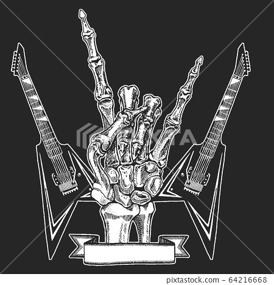
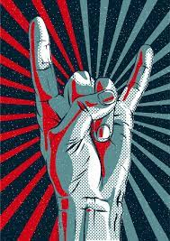
AC/DC are an Australian rock band formed in Sydney in 1973 by Scottish-born brothers Malcolm and Angus Young.[1] Their music has been variously described as hard rock, blues rock, and heavy metal,[2] but the band themselves call it simply "rock and roll".[3] AC/DC underwent several line-up changes before releasing their first album, 1975's High Voltage. Membership subsequently stabilised around the Young brothers, singer Bon Scott, drummer Phil Rudd, and bassist Mark Evans. Evans was fired from the band in 1977 and replaced by Cliff Williams, who has appeared on every AC/DC album since 1978's Powerage. In February 1980, about seven months after the release of their breakthrough album Highway to Hell, Scott died of acute alcohol poisoning after a night of heavy drinking.[4] The group considered disbanding but elected to stay together, bringing in longtime Geordie vocalist Brian Johnson as Scott's replacement.[5] Later that year, the band released their first album with Johnson, Back in Black, which was dedicated to Scott's memory. The album launched AC/DC to new heights of success and became one of the best selling albums of all time.
Nirvana was an American rock band formed in Aberdeen, Washington in 1987. Founded by lead singer and guitarist Kurt Cobain and bassist Krist Novoselic, the band went through a succession of drummers, most notably Chad Channing, before recruiting Dave Grohl in 1990. Nirvana's success popularized alternative rock, and they were often referenced as the figurehead band of Generation X. Their music maintains a popular following and continues to influence modern rock and roll culture. In the late 1980s, Nirvana established itself as part of the Seattle grunge scene, releasing its first album, Bleach, for the independent record label Sub Pop in 1989. They developed a sound that relied on dynamic contrasts, often between quiet verses and loud, heavy choruses. After signing to major label DGC Records in 1991, Nirvana found unexpected mainstream success with "Smells Like Teen Spirit", the first single from their landmark second album Nevermind (1991). A cultural phenomenon of the 1990s, Nevermind was certified Diamond by the RIAA and is credited for ending the dominance of hair metal.[1]
Metallica is an American heavy metal band. The band was formed in 1981 in Los Angeles by vocalist/guitarist James Hetfield and drummer Lars Ulrich, and has been based in San Francisco for most of its career.[1][2] The band's fast tempos, instrumentals and aggressive musicianship made them one of the founding "big four" bands of thrash metal, alongside Megadeth, Anthrax and Slayer. Metallica's current lineup comprises founding members and primary songwriters Hetfield and Ulrich, longtime lead guitarist Kirk Hammett, and bassist Robert Trujillo. Guitarist Dave Mustaine (who went on to form Megadeth after being fired from the band) and bassists Ron McGovney, Cliff Burton (who died in a bus accident in Sweden in 1986) and Jason Newsted are former members of the band.
The Rolling Stones are an English rock band formed in London in 1962. Active for almost six decades, they are one of the most popular and enduring bands of the rock era. Diverging from the pop rock of the early 1960s, the Rolling Stones pioneered the gritty, heavier-driven sound that came to define hard rock.[1] Their first stable line-up comprised of vocalist Mick Jagger, multi-instrumentalist Brian Jones, guitarist Keith Richards, bassist Bill Wyman, and drummer Charlie Watts. During their formative years Jones was the primary leader: he assembled the band, named it, and drove their sound and image. After Andrew Loog Oldham became the group's manager in 1963, he encouraged them to write their own songs. Jagger and Richards became the primary creative force behind the band, alienating Jones, who developed a drug addiction that interfered with his ability to contribute meaningfully.
Pink Floyd were an English rock band formed in London in 1964. Gaining an early following as one of the first British psychedelic groups, they were distinguished for their extended compositions, sonic experimentation, philosophical lyrics and elaborate live shows. They became a leading band of the progressive rock genre, cited by some as the greatest progressive rock band of all time. Pink Floyd were founded by Syd Barrett (guitar, lead vocals), Nick Mason (drums), Roger Waters (bass guitar, vocals), Richard Wright (keyboards, vocals) and Bob Klose (guitars); Klose quit in 1965. Under Barrett's leadership, they released two charting singles and the successful debut album The Piper at the Gates of Dawn (1967). Guitarist and vocalist David Gilmour joined in December 1967; Barrett left in April 1968 due to deteriorating mental health. Waters became the primary lyricist and thematic leader, devising the concepts behind the band's peak success with the albums The Dark Side of the Moon (1973), Wish You Were Here (1975), Animals (1977) and The Wall (1979). The musical film based on The Wall, Pink Floyd – The Wall (1982), won two BAFTA Awards.
Linkin Park is an American rock band from Agoura Hills, California. The band's current lineup comprises vocalist/rhythm guitarist/keyboardist Mike Shinoda, lead guitarist Brad Delson, bassist Dave Farrell, DJ/turntablist Joe Hahn and drummer Rob Bourdon, all of whom are founding members. Vocalists Mark Wakefield and Chester Bennington are former members of the band. Categorized as alternative rock, Linkin Park's earlier music spanned a fusion of heavy metal and hip hop,[1] while their later music features more electronica and pop elements.[2] Formed in 1996, Linkin Park rose to international fame with their debut studio album, Hybrid Theory (2000), which became certified Diamond by the Recording Industry Association of America (RIAA).[3] Released during the peak of the nu metal scene, the album's singles' heavy airplay on MTV led the singles "One Step Closer", "Crawling" and "In the End" all to chart highly on the Mainstream Rock chart; the latter crossed over to the pop chart.[4] Their second album, Meteora (2003), continued the band's success.[5] The band explored experimental sounds on their third album, Minutes to Midnight (2007).[6] By the end of the decade, Linkin Park was among the most successful and popular rock acts.[7]
Queen are a British rock band formed in London in 1970. Their classic line-up was Freddie Mercury (lead vocals, piano), Brian May (guitar, vocals), Roger Taylor (drums, vocals) and John Deacon (bass). Their earliest works were influenced by progressive rock, hard rock and heavy metal, but the band gradually ventured into more conventional and radio-friendly works by incorporating further styles, such as arena rock and pop rock. Before forming Queen, May and Taylor had played together in the band Smile. Mercury was a fan of Smile and encouraged them to experiment with more elaborate stage and recording techniques. He joined in 1970 and suggested the name "Queen". Deacon was recruited in February 1971, before the band released their eponymous debut album in 1973. Queen first charted in the UK with their second album, Queen II, in 1974. Sheer Heart Attack later that year and A Night at the Opera in 1975 brought them international success. The latter featured "Bohemian Rhapsody", which stayed at number one in the UK for nine weeks and helped popularise the music video format.
Pantera (/pænˈtɛrə/) was an American heavy metal band from Arlington, Texas, formed in 1981. The group's best-known lineup consisted of the Abbott brothers (drummer Vinnie Paul and guitarist Dimebag Darrell), along with vocalist Phil Anselmo and bassist Rex Brown. In addition to their development and popularization of the groove metal subgenre, Pantera is credited (along with others, such as Testament, Sepultura and Machine Head) for being part of the second wave of thrash metal scene from the late 1980s to early-to-mid 1990s.[2][3] Pantera is regarded as one of the most successful and influential bands in heavy metal history, having sold around 20 million records worldwide[4] and having received four Grammy nominations.[5]
Korn (stylized as KoЯn) is an American nu metal band from Bakersfield, California, formed in 1993. The band is notable for pioneering the nu metal genre and bringing it into the mainstream.[3][4][5][6][7][8] Originally formed in 1993 by three members of the band L.A.P.D., Korn's current lineup features founding members James "Munky" Shaffer (rhythm guitar), Reginald "Fieldy" Arvizu (bass), Brian "Head" Welch (lead guitar, backing vocals), and Jonathan Davis (lead vocals, bagpipes), with the addition of Ray Luzier (drums) in 2007, replacing the band's first drummer, David Silveria.
Guns N' Roses[a] is an American hard rock band from Los Angeles, California, formed in 1985. When they signed to Geffen Records in 1986, the band comprised vocalist Axl Rose, lead guitarist Slash, rhythm guitarist Izzy Stradlin, bassist Duff McKagan, and drummer Steven Adler. The current lineup consists of Rose, Slash, McKagan, guitarist Richard Fortus, drummer Frank Ferrer and keyboardists Dizzy Reed and Melissa Reese. Guns N' Roses' debut album, Appetite for Destruction (1987), reached number one on the Billboard 200 a year after its release, on the strength of the top 10 singles "Welcome to the Jungle", "Paradise City", and "Sweet Child o' Mine", the band's only single to reach number one on the Billboard Hot 100. The album has sold approximately 30 million copies worldwide, including 18 million units in the United States, making it the country's bestselling debut album and eleventh-bestselling album. Their next studio album, G N' R Lies (1988), reached number two on the Billboard 200, sold ten million copies worldwide (including five million in the U.S.), and included the top 5 hit "Patience".
 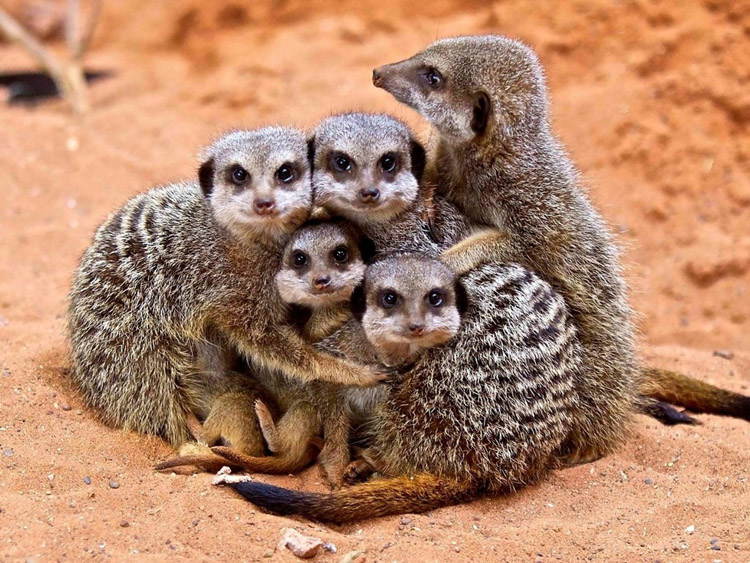
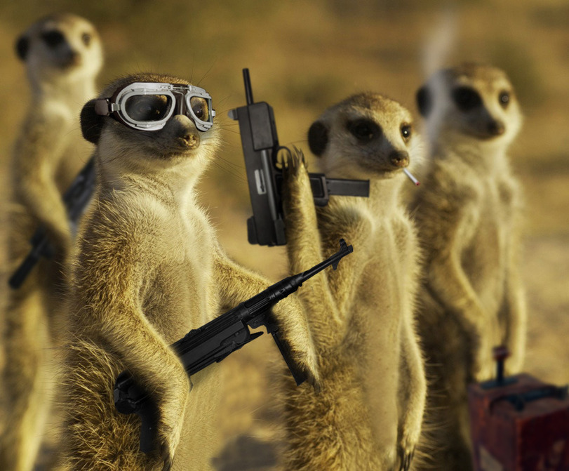
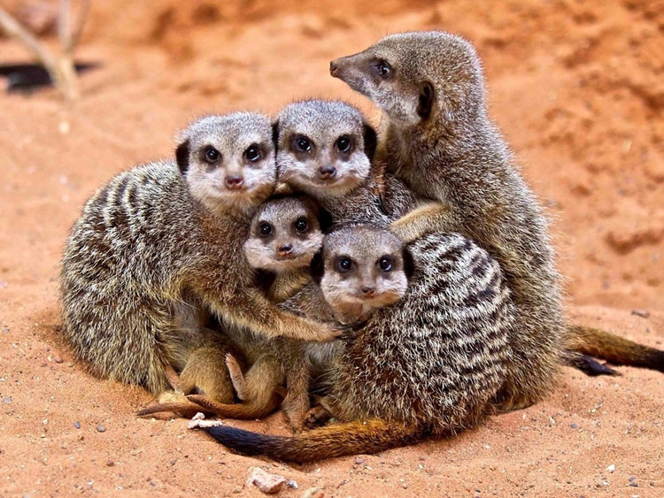
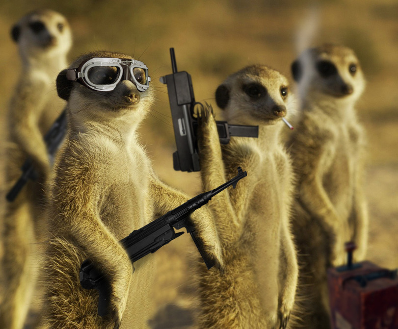
pull test. github + add commit changes.